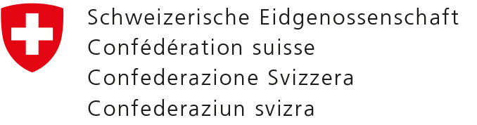

GEOSchool Day 2017  &
& 
25.04.2017, EPFL Lausanne
Découvrez le monde de la chasse géo-trésor, des "Story Maps", des mini-drones et de la topométrie
Chers élèves des écoles secondaires

Quels outils avons-nous pour explorer et comprendre notre monde virtuel?
Avec quels moyens technologiques évolue la matière de géomatique et de gestion du territoire?
Comment peut-on recueillir, traiter et analyser nos informations sur Internet?
Et bien, tu vas être surpris!
Bac à sable
Cette expérience démontre de manière ludique les notions de base de topographie ainsi que de l’étude de phénomènes spatiaux, tels que les écoulements et les crues ou l’aménagement du territoire.
Carmen Vega Orozco
Story Map Challenge
Le but du jeu est de trouver des lieux-dits originaux, ou d’estimer la position de photos historiques avec le SwissGuesser. Le visualisateur de cartes de la Confédération offres des possibilités étonnantes grâce aux programmes d'apprentissage.
Daniela Brandt
Chasse au trésor
Partir à la chasse aux données spatiales à l'EPFL. Cette expérience permet de découvrir le principe des systèmes d'information géographique pour recueillir, stocker, traiter, analyser, et présenter tous les types de données géographiques.
Raymond Treier
Saisie intelligente
Atelier de collecte de données - ou comment la carte SIG et les outils de géolocalisation permettent une saisie intelligente d'observations de terrain.
Jean-Marc Arzrouni
Selfies par les drones
Le but du jeu est de trouver l'angle et la hauteur pour prendre une photo de votre classe. Les drones professionnels permettent de découvrir, cartographier et mesurer de nouveaux objets terrestres.
Michel Kasser

Dates et lieu
Programme
- Bienvenue au GEOSchoolDay à Lausanne et présentation du concours "La géomaticienne / le géomaticien 2017"
- Tour des ateliers
- Les domaines professionnels et les filières de formation en géomatique
- Résultats du concours et remise des prix
La devise: dépasser les limites
Flyer
Jubilé 100 ans d'Ingénieurs-Géomètres Suisses
Le GEOSchoolDay est le grand géoévénement pour les écoles suisses-romandes dans le cadre de la célébration des 100 ans de l’association des Ingénieurs-Géomètres Suisses.
Le but du GEOSchool Day est de présenter aux jeunes un secteur d’activités qui mérite d’être bien plus connu, celui des géoinformations, avec de nombreux jeux et animations. Nous souhaitons promouvoir ce secteur auprès des jeunes pour leurs études futures, avec d’excellentes perspectives d’emploi.